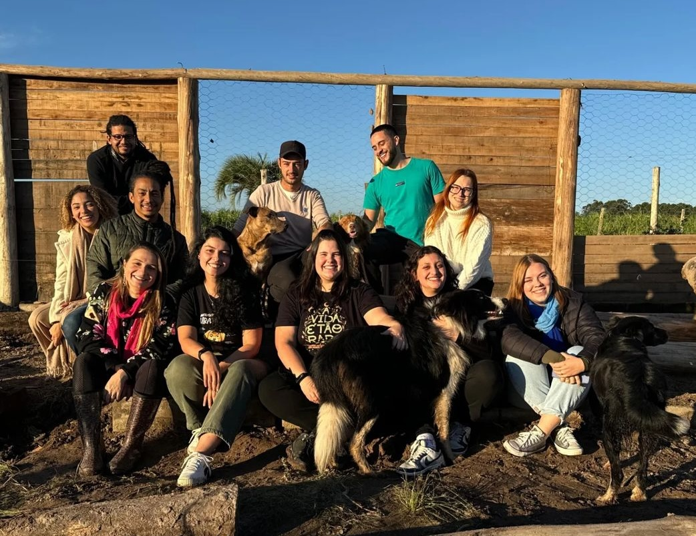

Caramelos do Vale é uma ONG dedicada à proteção e ao cuidado de animais em situação de abandono e vulnerabilidade. Fundada com o objetivo de criar um mundo mais compassivo e responsável, nossa missão é resgatar, tratar e encontrar lares amorosos para animais que precisam de ajuda. Com o apoio de voluntários dedicados e doadores generosos, seguimos firmes em nossa luta para dar voz e esperança a esses seres indefesos, promovendo ações e campanhas que fazem a diferença.
89
Adoções
172
Resgates
27
Animais atualmente em nossos cuidados
*alguns dos animais resgatados tiveram os tutores posteriormente localizados e não fazem parte do número de adoções
Essa dupla foi responsável pela formação do grupo, e o nome "Caramelos do Vale" é em homenagem a eles. Há alguns anos, eles apareceram no campus do Vale da UFRGS. Ambos são castrados, vacinados, e já foram levados ao veterinário algumas vezes. Recebem ração diariamente e usam coleiras anti pulgas e carrapatos. Embora eles sejam um sucesso na UFRGS, estão disponíveis para uma adoção conjunta.
Há mais de dois anos estamos lutando para dar um futuro melhor aos cães que são vítimas de abandono na região do Campus do Vale da UFRGS - que são muitos! Também trabalhamos de forma intensa nas enchentes de Porto Alegre de maio/2024, onde fomos muito além da nossa área de atuação.
Ao todo, já acolhemos e mudamos o futuro de mais de 150 animais. Também construímos do zero um espaço de acolhimento para abrigar cães provisória ou definitivamente, com todo conforto e cuidado que eles merecem.
Nossa atuação depende da ajuda de voluntários, parceiros e doadores que compartilham da nossa causa. Além de resgates, realizamos eventos de adoção e campanhas de arrecadação de ração e medicamentos.
Com a ajuda de uma equipe dedicada de voluntários e parceiros, trabalhamos sem descanso para garantir que cada animal receba o cuidado necessário. Para nós, cada vida importa, e cada adoção é uma vitória para todos💛.
Você também pode fazer parte dessa corrente de amor! Seja adotando, voluntariando ou fazendo uma doação, toda ajuda é fundamental para continuarmos nosso trabalho. Juntos, podemos transformar a realidade de muitos animais e fazer do mundo um lugar mais justo e seguro para todos.